Језици специфични за домен
Језичке синтаксе и мета-моделовање
Проф. др Игор Дејановић (igord на uns ac rs)
Креирано 2025-11-16 Sun 13:12, притисни ESC за мапу, Ctrl+Shift+F за претрагу, "?" за помоћ
Садржај
1. Синтаксе
1.1. Технике и технологије за имплементацију ЈСД-ова
- Парсер генератори/интерпретери
- Мета-моделовање
- Друге технике: онтологије, XML технологије…
1.2. Конкретна синтакса
- Да би мограм приказали кориснику потребна нам је конкретна синтакса.
- Конкретна синтакса дефинише "изглед" исказа на неком језику, односно у ширем смислу дефинише и начине интеракције корисника са језичким исказима тј. представља интерфејс језик-корисник.
- Иако нам је за један језик довољна једна конкретна синтакса, можемо их имати више.
- Конкретне синтаксе могу бити текстуалне, графичке, табеларне, типа стабла, базиране на дијалозима …
1.3. Пример истог исказа употребом две различите конкретне синтаксе

1.4. Парсирање - синтаксна анализа
- Анализа линеарног записа низа симбола на основу правила неке формалне граматике језика.
- Трансформација улазног стринга у стабло парсирања.
1.5. Стабло парсирања (енг. parse tree)
- Настаје из ниске симбола (улазног стринга) процесом скенирања (токенизације или лексичке анализе) и парсирања.
- Листови стабла су токени препознати од стране скенера док је структура стабла одређена граматиком језика.
- Стабло парсирања рефлектује синтаксну структуру улазног стринга на бази унапред дефинисане формалне граматике.
1.6. Стабло парсирања - Пример
1.7. Апстрактна синтакса
- Одређује правила валидности језичких исказа са становишта његове структуре без разматрања конкретне репрезентације исказа (конкретне синтаксе).
- Дефинише структуре валидних реченица са становишта језика.
- Садржи концепте домена, њихове особине и међусобне релације.
- Језици за дефинисање апстрактних синтакси језика се у домену моделовања називају мета-мета-моделима*.
1.8. Пример - апстрактна синтакса језика за опис коначних аутомата
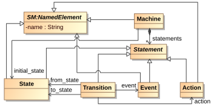
1.9. Пример - апстрактна синтакса језика за једноставне алгебарске изразе
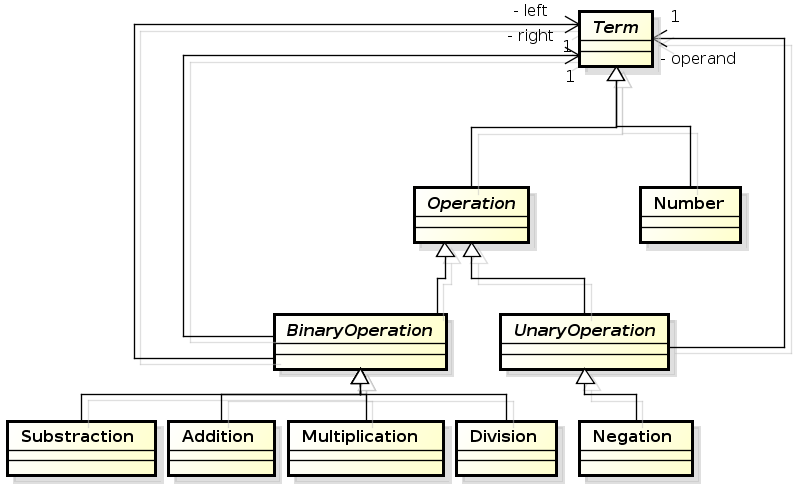
1.10. Апстрактно синтаксно стабло
- Сваки исказ на датом језику се може на апстрактан начин описати апстрактним синтаксним стаблом (енг. Abstract Syntax Tree - AST).
- AST је усмерено лабелирано стабло где чворови стабла представљају инстанце концепата апстрактне синтаксе.
1.11. Пример апстрактног синтаксног стабла
1.12. Разлике између апстрактног и конкретног синтаксног стабла
- Конкретно синтаксно стабло је базирано на формалној граматици која описује детаље записа у текстуалном облику.
- Апстрактно синтаксно стабло садржи суштину језичког исказа.
- Можемо имати више граматика за исти језик односно једно апстрактно синтаксно стабло можемо записати на више различитих начина што резултује различитим конкретним синтаксним стаблима.
- Пример: Израз
-(4-1)*5/(2+4.67)можемо у постфиксној нотацији записати као4 1 - 5 * 2 4.67 + / -. Ово ће резултовати различитим стаблима парсирања али је суштина израза иста и може резултовати истим апстрактним синтаксним стаблом.
2. Секундарна нотација
2.1. Секундарна нотација
- Иако конкретна синтакса намеће своја правила, готово увек постоји одређена слобода која се оставља кориснику и која омогућава да се мограм који је исти са становиша апстрактне синтаксе (исто апстрактно синтаксно стабло) презентује на различите начине.
- Примери:
- "Празни" карактери код текстуалних синтакси (white-spaces) најчешће немају семантичког значаја па се могу користити на различите начине (код се може назубљивати на више начина).
- Положаји, боја и величине симбола код графичких синтакси најчешће немају семантичког значења па корисник може да искористи ове особине да енкодује неко своје значење.
2.2. Проблеми са секундарном нотацијом
- Секундарна нотација се може користити на произвољан начин.
- Сваки корисник развија свој стил употребе секундарне нотације што може проузроковати погрешно или отежано тумачење.
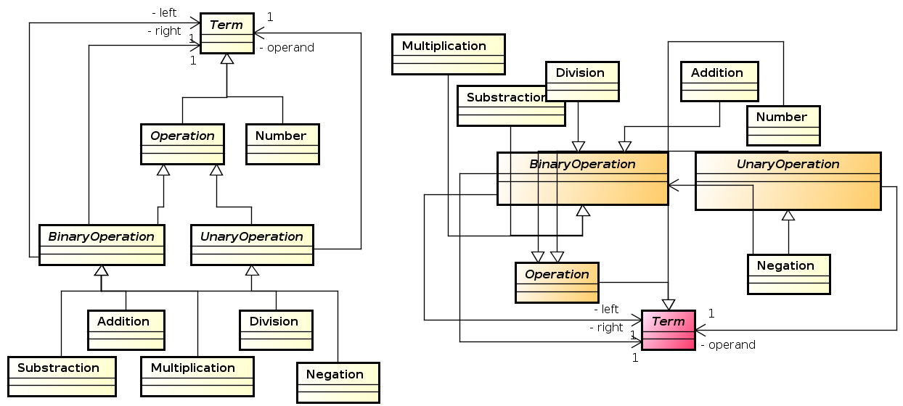
Да ли су ова два мограма иста?
2.3. Проблеми са секундарном нотацијом
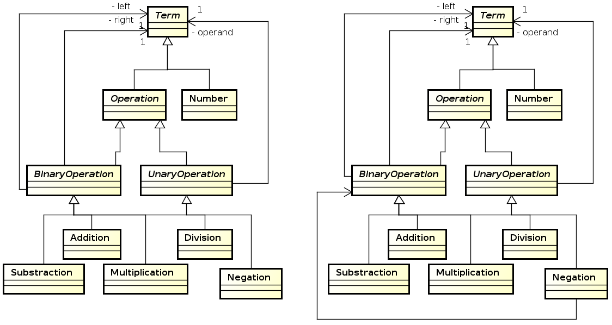
А сада?
2.4. Могућа решења
- Дефинисање стила кодирања - coding style (код текстуалних) кога се придржавају сви програмери. Потребна је одређена доза дисциплине.
- Смањење корисничке слободе - уграђивање могућих елемената секундарне нотације у формални језик. Алати ће спречити неисправну употребу.
2.5. Пример - Python
- Python користи идентацију кода за контролу тока програма.
- Један од разлога читљивости Пyтхон кода - сви програмери морају исправно да назубљују код.
def inner_from_python(expression):
retval = None
if isinstance(expression, types.FunctionType):
# If this expression is a parser rule
rule_name = expression.__name__
if rule_name in __rule_cache:
c_rule = __rule_cache.get(rule_name)
if self.debug:
print("Rule {} founded in cache.".format(rule_name))
if isinstance(c_rule, CrossRef):
self.__cross_refs += 1
if self.debug:
print("CrossRef usage: {}"
.format(c_rule.target_rule_name))
return c_rule
...
2.6. Приступи у реализацији едитора за ЈСД-ове
Пројекционе радионице - директна измена апстрактне репрезентације кроз пројекцију.

Базиране на парсерима - измена се врши посредно кроз текст који се парсира да би се добила апстрактна репрезентација.
3. Мета-моделовање
3.1. Модел
- Моделовање је есенцијално за људску активност јер свакој акцији претходи, експлицитно или имплицитно, креирање модела.
- Модели могу бити дескриптивни, уколико моделују постојећи реални систем, или прескриптивни (спецификација) уколико представљају план система који треба да се изгради.
- Модел представља опис, или спецификацију система и његовог окружења креиран за одређену намену. Најчешће је модел представљен као комбинација цртежа и текста. Текст може бити задат језиком за моделовање или природним језиком*.
3.2. Модел - други покушај
Модел представља поједностављење система са одређеним циљем. Модел треба да одговори на питања уместо стварног система. Одговори добијени од модела морају да буду исти као и они добијени од реалног система, под условом да се питања налазе у домену дефинисаном циљем модела. Да би био користан, модел мора бити једноставнији за употребу од реалног система. Да би се ово постигло, многи детаљи реалног система су апстраховани и изостављени. Ово поједностављење је срж моделовања.
3.3. Основне карактеристике модела
- Модел не представљају само цртежи и текстуални описи. Модел може имати материјалну форму нпр. може бити модел/макета авиона, поједностављена верзија мотора са унутрашњим сагоревањем итд.
- Апстракција и намена, тј. скуп питања на које желимо да добијемо одговоре, су основне карактеристике модела.
- У општем случају, не можемо очекивати да ће модел дати потпуно исте одговоре као моделовани систем али можемо очекивати да разлике (грешке) буду у пројектованим границама.
3.4. Мета-модел
- Када креирамо модел система морамо поштовати одређена правила односно морамо користити одређени језик за моделовање.
- Језик може бити опште намене (нпр. UML) или специфичан за домен.
- Такав језик представља експлицитну спецификацију коришћене апстракције при моделовању*.
- Апстрактна синтакса датог језика у свету моделовања је такође представљена као модел. Овакав модел називамо мета-моделом.
- Мета-модел садржи концепте домена, њихове међусобне везе и ограничења.
3.5. Пример - мета-модел језика за опис коначних аутомата
Апстрактна синтакса је мета-модел
3.6. Мета-метамодел
- Креирање језика представља домен са својим концептима и правилима.
- Језик овог домена (језик за опис језика) називамо мета-језиком.
- Као што апстрактну синтаксу било ког језика називамо мета-моделом, апстракну синтаксу мета-језика називамо мета-метамоделом.
- Мета-метамоделом можемо описати апстрактну синтаксу било ког језика па и мета-језика. Стога кажемо да је мета-метамодел самодефинишући.
3.7. Стек за метамоделовање
3.8. Проблеми са стеком за метамоделовање
Два важна проблема постоје када је стек за метамоделовање у питању:
- У каквој су вези ентитети и концепти реалног света са моделима?
- Како тумачити дуалност везе инстанцирања? На пример, конкретан UML објекат са
М1 нивоа је инстанца конкретне UML класе са М1 нивоа, али је истовремено и
инстанца UML
Objectконцепта са М2 нивоа.
3.9. Могућа решења
- Први проблем: посебан третман М0 нивоа. М1→М0 – представа (енг. representation или representationOf). У обрнутом смеру М0→М1 (енг. representedBy). Елементи модела са М1 нивоа представљају ентитете стварног света са М0 нивоа.
- Други проблем: веза између метанивоа – усклађеност (енг. conformantTo или
conformsTo) или meta. Нпр. конкретна UML класа са М1 нивоа у складу са UML
Classконцептом М2 нивоа. - Везе између нивоа изнад М0 називамо лингвистичко инстанцирање за разлику од веза инстанцирања унутар метанивоа која су подржана језиком описаним вишим метанивоом. Инстанцирање унутар метанивоа називамо онтолошким инстанцирањем.
3.10. Операције које користимо при (мета)моделовању
- Апстракција
- Класификација
- Генерализација
3.11. Апстракција
- Једно од основних оруђа људског интелекта.
- Процес занемаривања небитних информација приликом креирања модела.
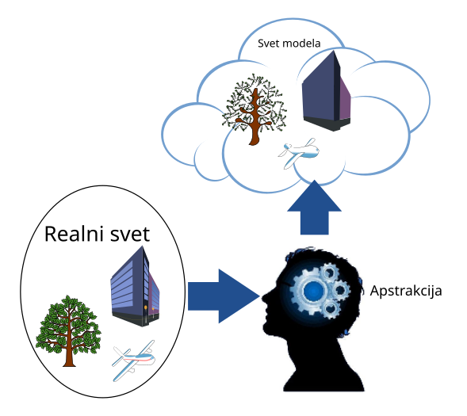
3.12. Апстракција
If you assume a certain basic knowledge in the audience, you can talk in a language that deals with bigger concepts, and express things in a much shorter and clearer way. This, more or less, is what abstraction is.
3.13. Апстракција и метанивои
- Операција апстракције се дешава на преласку између нивоа М0 и М1.
- Веза између нивоа М0 (реални систем) и М1 (модел система): representationOf у смеру М1 → М0 или representedBy у смеру М0 → М1.
- Класичне инфраструктуре за метамоделовање не дефинишу у каквој су вези објекти реалног света са моделима.
- На нивоу М0, се код класичног приступа, посматрају софтверске репрезентације објеката реалног света (нпр, ред у табели базе, објекат у меморији итд.) док се стварни објекти као што су људи, предмети, догађаји не анализирају експлицитно.
3.14. Класификација
- Објекти реалних система, као и њихови модели, се могу груписати на основу заједничких особина.
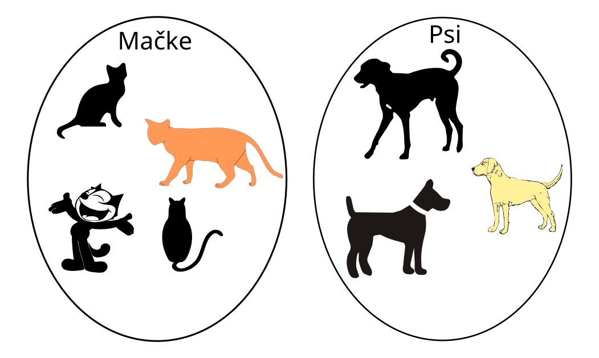
3.15. Класификација и метанивои
- Класификација се може обављати у оквиру метанивоа уколико језик то допушта. На пример, група одређених објеката UML објектног дијаграма која описује конкретне особе са именом, презименом и другим релевантним информацијама дефинисаних апстракцијом може бити класификована и описана УМЛ класом.
- Веза класификације се може обављати и између метанивоа, тако се веза елемената
модела са метаелементима може карактерисати као веза класификације. На пример
све класе дијаграма класа, који користи УМЛ метамодел, су у вези са концептом
ClassUML метамодела. У том случају, класификација је извршена на основу особинаClassконцепта.
3.16. Токен модели и модели типова
- Први их је дефинисао Чарлс Сандерс Пирс.
- Токен модели:
- Модели конкретних појединачних појава реалног света.
- Настају искључиво процесом апстракције.
- Пример: географска мапа, макета авиона…
- Модели типова:
- Настају процесом класификације модела токена на основу заједничких особина.
- Овакав модел описује класу појава реалног света.
3.17. Генерализација
- Представља даљи процес класификације модела типова на основу заједничких особина.
- Одвија се унутар модела типова на тај начин што се типови групишу у апстрактне концепте на основу заједничких особина. За тако креиране концепте кажемо да генерализују посматрани скуп концепата, односно посматрани скуп концепата се наслеђује из генерализованог концепта.
3.18. Апстракција, класификација и генерализација
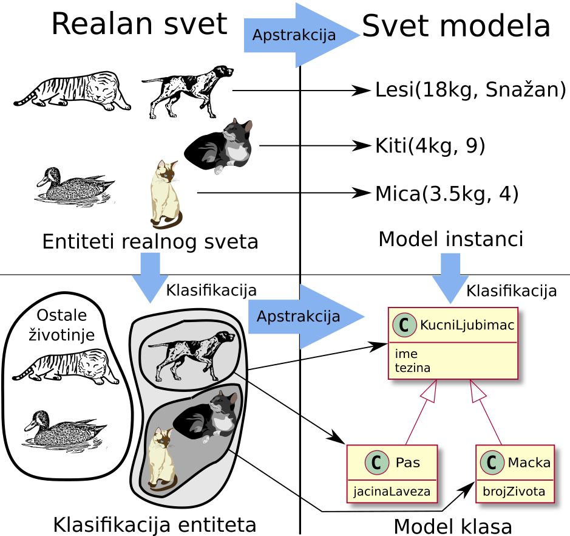
4. Мета-метамодели
4.1. MOF
- MOF (Meta-Object Facility)1 је мета-метамодел и индустријски стандард који се развија под окриљем OMG (Object Management Group) конзорцијума.
- Представља основну интеграциону платформу MDA (Model-Driven Architecture) правца и омогућава интероперабилност UML базираних алата.
- Настао је на бази UML-а и у MOF-у се данас описују OMG језици за моделовање, између осталог и UML
- MOF је подељен на EMOF (Essential MOF), CMOF(Complete MOF) и SMOF(Semantic MOF).
4.2. EMOF
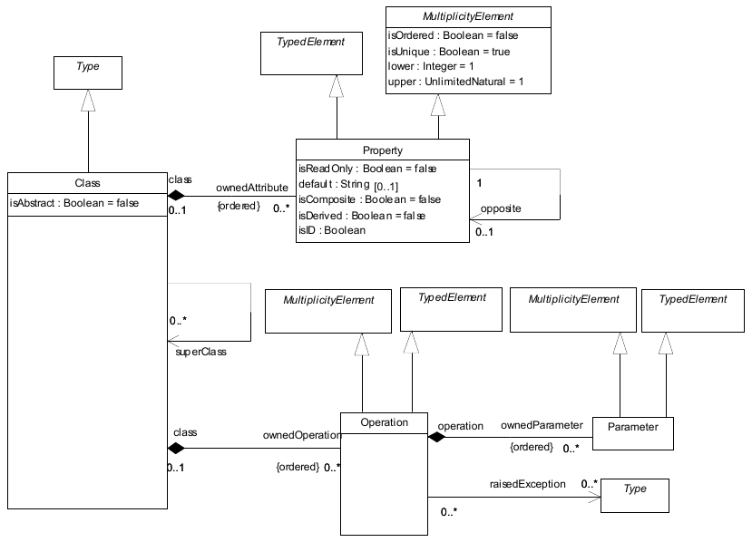
4.3. ECore
- ECore је мета-метамодел чији је развој започео IBM а касније је развијан у оквиру Eclipse EMF (Eclipse Modeling Framework)1 пројекта.
- Базиран на програмском језику Јава. Под лиценцом слободног софтвера (Eclipse Public License).
- У основи представља ефикасну имплементацију EMOF мета-метамодела.
- Индустријски стандард, доказан и тестиран кроз вишегодишњу употребу на реалним пројектима.
4.4. ECore
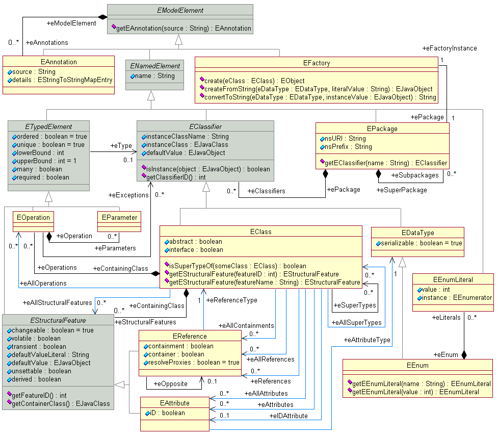
4.5. GOPPRR
- Име представља скраћеницу речи које описују основне концепте језика: G raph, O bject, P roperty, P ort, R ole, R elationship.
- Власнички софтвер. Окосница MetaEdit+ alata1. Настао је од ранијих верзија које су носиле назив GOPRR и OPRR2.
4.6. MoRP
- Развијен на Катедри за информатику.
- Једноставан - мали број концепата.
- Имплементација на Јави1. У току порт на Пајтон2 (чим се нађе времена ;) ).
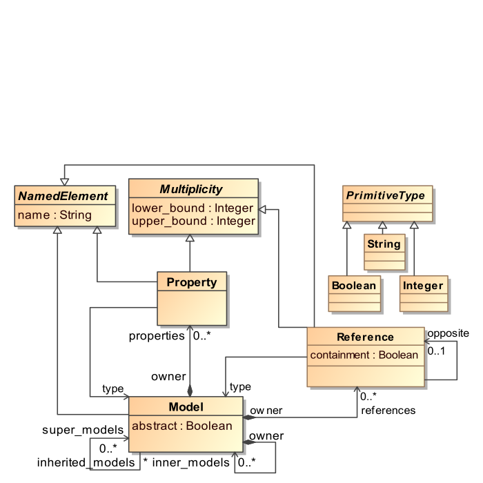
5. Пример усклађености кроз метанивое
5.1. Пример - Мограм, језик, мета-језик
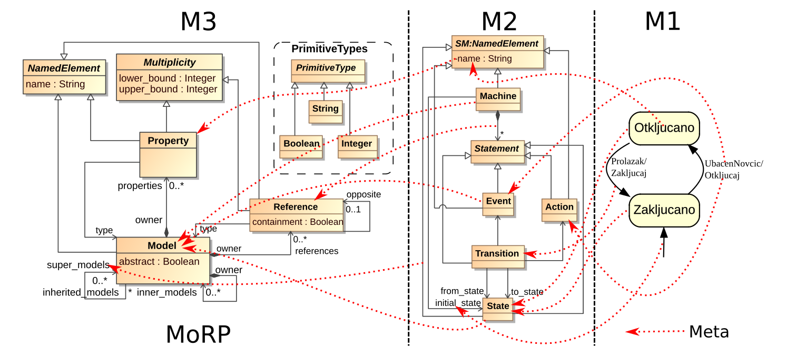
6. Анализа и моделовање домена
6.1. Анализа домена
- Проблем у комуникацији:
- Доменски експерти причају одређеним језиком. Програмери су такође доменски експерти за израду софтвера и имају свој језик.
- Неко из тима мора постати билингвалан у циљу превођења исказа између два тима.
- Језик није формализован и временом долази до фрагментације значења. Различити чланови тима или подтимови измају различита тумачења одређених термина.
- Анализа домена - тимска, итеративна активност. Аналитичар кроз разговор са доменским експертима и читањем документације креира доменски модел.
6.2. Свеприсутни језик
- Доменски модел, тј. метамодел, представља срж знања о домену и основу комуникације свих учесника на пројекту.
- Свеприсутни језик (Ubiquitous Language) има јасно дефинисану семантику чиме се избегава произвољно тумачење.
- Временом сви чланови тима усвајају нови речник појмова који директно произилази из доменског модела чиме се омогућава боље разумевање и отклањају се тешкоће у комуникацији.
6.3. Пример - ЈСД за електронику
Узмимо за пример да је потребно креирати метамодел за област електронике. Циљ нам је креирање софтвера за цртање електричних шема. У разговору са доменским експертима чујемо следеће исказе:
Електрична шема се састоји од електричних компоненти које поседују терминале. Терминали се спајају конекцијама. Свака шема, компонента, терминал и конекција имају назив и опис.
6.4. Прва итерација
6.5. Конкретни модели
У току анализе користимо конкретне примере модела да би боље разумели домен.
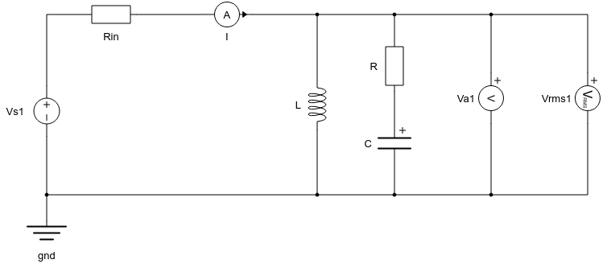
6.6. Друга итерација
Даљи ток разговора може ићи у правцу профињења модела, односно дефинисања детаља. Искази би могли бити, на пример:
Компоненте имају особине које су дефинисане називом и вредношћу. Тип особине одређује GUI компоненту за унос вредности, подразумевану вредност, јединицу мере, минималну и максималну допуштену вредност.
Компоненте су такође одређеног типа. Све компоненте истог типа имају исту икону, опис, типове особина и терминала. Типови терминала дефинишу додатно и позицију терминала на типу компоненте.
6.7. Друга итерација - скица
6.8. Финални модел
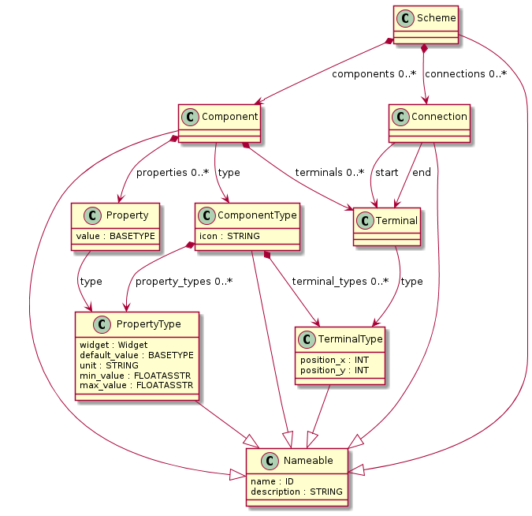
7. Језици, програми и домени
7.1. Програми и језици
- Нека је \(P\) скуп свих могућих програма где је \(p \in P\) програм.
- Нека је \(L\) скуп свих могућих програмских језика где је \(l \in L\) конкретан језик.
- Језици дефинишу потребну структуру и нотацију за енкодовање програма.
- Ако \(p\) можемо енкодовати на језику \(L\) означавамо га са \(p_l\).
- Алгоритам нпр. quick sort можемо енкодовати на различитим језицима, нпр. Пyтхон и Јава. Односно можемо имати конкретне представе \(p_{l_1}\) и \(p_{l_2}\) на језицима \(l_1\) и \(l_2\).
7.2. Погодност језика
- Функционално исти програми енкодовани на различитим језицима имају различите нефункционалне карактеристике (брзина, заузеће меморије итд.).
- Језици су погодни за различите примене. Нпр JavaScript за веб развој, Go за конкурентне програме итд.
7.3. Трансформације програма
Програм можемо трансформисати са једног језика на други. На пример
\(p_{l_1} \overset{T}{\rightarrow} p_{l_2}\)
Трансформација \(T\) преводи програм са језика \(l_1\) на језик \(l_2\). Нпр. Legacy Modernization.
Можемо трансформисати програм унутар истог језика уз очување функционалних карактеристика.
\({p_1}_{l} \overset{T_{refc}}{\rightarrow} {p_2}_{l}\)
Трансформацију \(T_{refc}\) називамо рефакторисање.
7.4. Дефинисање домена употребом језика
Ако је језик \(l\) специфичан за домен тада се домен може дефинисати као скуп свих програма на датом језику, у ознаци \(P_l\).
\(P_l \subset P\)
Али ова дефиниција није претерано корисна
7.5. Дефинисање домена - индуктивни приступ
- Од дна ка врху - енг. bottom-up.
- Дефинишемо домен путем софтвера који се већ користи у домену.
- Уколико посматрамо програме на истом језику лакше ћемо уочити одређене API-је, идиоме и конструкције које се у домену користе.
7.6. Дефинисање домена - дедуктивни приступ
- Од врха ка дну - енг. top-down.
- Посматрамо корпус знања о датом домену и обављамо анализу.
- \(P_D \subset P\) је скуп програма који су интересантни у домену \(D\).
- Тежи приступ јер је потребно разумети природу домена \(D\).
7.7. Дефинисање домена - преклапање скупова
- \(P_D \subset P\) је скуп свих програма домена \(D\)
- Овај скуп је могуће исказати на више језика. Нпр. Уколико посматрамо \(P_l \subset P\) тј. скуп свих програма на језику \(l\) он ће делимично поклопити \(P_D\).
- За добар ЈСД \(l\) ће важити да \(P_l \simeq P_D\).
7.8. Дефиниција
Језик специфичан за неки домен \(D\) (у ознаци \(l_D\)) представља језик који је специјализован и оптимизован за енкодовање програма из скупа \(P_D\). Можемо рећи да је \(l_D\) ефикаснији у репрезентацији програма из \(P_D\) од других језика. Ова ефикасност се постиже употребом апстракција које су прилагођене домену и изостављањем непотребних детаља који су небитни за \(D\).
7.9. Надапроксимација и подапроксимација
- Покривеност домена:
- Ако \(P_l\) може енкодовати све програме из \(P_D\) али и још неке => надапроксимација (\(P_ln\))
- Ако \(P_l\) може енкодовати само програме из \(P_D\) али не све => подапроксимација (\(P_lp\))
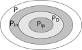
- Надапроксимација - могуће дефинисати програме ван \(P_D\) али језик није у томе ефикасан.
- Подапроксимација - постоје програми који су у \(P_D\) али их језиком није могуће описати. Обично се у пракси у том случају користи ЈОН за допуну функционалности.
7.10. Хијерархија домена
- Домени се могу организовати у хијерархије - домени вишег нивоа чине подскуп домена нижег нивоа у смислу опсега, односно домени вишег нивоа специјализују домене нижег нивоа.
- Овај приступ омогућава бољу организацију и поновну искористивост (енг. reusability).
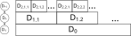
- \(D_0\) - домен свих могућих програма => \(P_{D_0} \equiv P\) - домен ЈОН језика.
8. Литература
- Игор Дејановић, Језици специфични за домен, Факултет техничких наука, Нови Сад, 2021. (доступно у скриптарници ФТН-а)
- M. Völter, DSL Engineering: Designing, Implementing and Using Domain-Specific Languages. 2013.